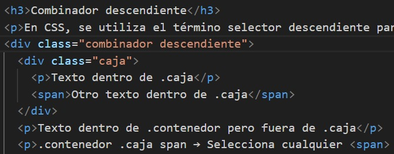

{kind=link}
Bienvenido
Explora nuestros servicios y descubre lo que podemos ofrecerte.
Sobre Nosotros
Somos una empresa enfocada en brindar soluciones digitales innovadoras.
Los selectores de CSS son una parte fundamental en la aplicación de estilos en páginas web. Constituyen herramientas esenciales que permiten seleccionar y definir cómo se aplicarán reglas de estilo a elementos específicos de una página. Para comprender mejor este concepto, es importante conocer los distintos tipos de selectores y cómo combinarlos. Un selector de CSS es, en esencia, un código que nos permite especificar qué elemento o elementos deseamos afectar con estilos particulares.
Selector: div
Descripción: Seleccionamos por etiqueta. Aplicamos estilos a todas las etiquetas que coincidan.
Ejemplo 1: todos los elementos que sean etiquetas HTML "strong" se visualizarán de color azul.
Ejemplo 2: Se le indicará al navegador que aplique un color de fondo azul a todas las etiquetas "div" encontradas en la página. La sección en la que se ha colocado div se denomina selector.
Este es un párrafo dentro de un div. El fondo de todos los div es AZUL y la letra sera BLANCA
Selector: #page
Descripción: Seleccionamos por ID. Aplicamos estilos al elemento que tenga ese id. Debería ser un único elemento.
Este es un parrafo dentro de un div con un id="ejemplo3". El fondo de este es ROJO
Este es un parrafo dentro de un div con un id="ejemplo4". El fondo de este es NEGRO
Selector: .primary
Descripción: Aplicamos estilos a los elementos que tengan dicha class. La diferencia principal respecto a los id es que las clases no necesitan ser únicas, sino que pueden repetirse a lo largo del documento HTML.
Seleccione una opción:
Este es un parrafo con la clase "ejemplo8" su color es marron tiene tamaño y estilo diferente.
Selector: button.primary
Descripción: Mixto. Seleccionamos por múltiples criterios. En este caso, por elemento y por clase. es viable emplear múltiples clases en un solo elemento HTML, simplemente separándolas por espacios dentro del atributo class.
Ejemplo 9: El primer boton o "Botón principal" como se observa tiene 3 clases y al combinar esas clases en el selector CSS "button.classic.primary.large" se aplica un estilo solo cuando el botón tiene todas esas clases al mismo tiempo. Lo mismo sucede con las casillas la primera tiene una clase llamada "casilla amarilla" y la segunda "casilla roja"
Esta casilla tiene un fondo amarillo.
Esta casilla tiene un fondo rojo.
En algunos casos puede que no tengamos clases ni id establecidas, y nos interese dar estilo por otros atributos.
Ejemplo 10: Al botón desactivado y al parrafo les pongo un atributo disabled. En el CSS pongo "button[disabled]" este selecciona solo los botones con el atributo "disabled" por otro lado al poner solo "[disabled]" solo selecciona cualquier elemento con el atributo "disabledparrafo del ejemplo al tener el atributo disabled
Sin embargo, no todo resulta tan sencillo como el ejemplo anterior. Existen diversas maneras de emplear los atributos en CSS, algunas de ellas son muy potentes y flexibles. Estas se basan en un concepto denominado expresiones regulares,aunque no se ajustan estrictamente a la definición de expresiones regulares.

[class~="miclase"]: Los elementos con la clase "miclase" tendrán fondo amarillo y padding.
[lang|="es"]: Si el atributo lang empieza con ess, el texto será verde e itálico. Este párrafo tiene un atributo "es-MX."
[href^="https://"]: Los enlaces que empiezan con https:// tendrán un subrayado azul grueso. Enlace seguro.La potencia de los atributos CSS es que podemos indicar el valor exacto que deben tener para que sean seleccionados. Para ello, simplemente utilizamos el símbolo = y escribimos el texto entre comillas dobles: a[rel="nofollow"]
Enlace no seguido Enlace seguro Enlace combinadoEste ejemplo selecciona los enlaces que tienen un atributo rel establecido a nofollow y le pone fondo rojo y letra blanca.
Estoy tranquilo y feliz
Hoy no es mi mejor día
¡Qué gran día!
Descansando un poco
[data-mood~="feliz"] selecciona solo los elementos donde la palabra "feliz" está en la lista del atributo data-mood. Si el atributo tiene feliz en su lista (como feliz relajado o feliz emocionado), se aplicará el estilo.
Este texto está en español de México.
Este texto está en español de Colombia.
This text is in English (USA).
[lang|="esi"] selecciona los elementos cuyo atributo lang comienza con esi- (ejemplo: esi-MX, esi-CO). Los textos en español tendrán fondo rojo, texto verde y padding.
Los atributos CSS permiten seleccionar elementos HTML dependiendo de si empiezan (o acaban) por el valor indicado.
a[href]::after Aplica a todos los enlaces < a > con href, mostrando su URL después del texto.Este método es útil para alertar sobre sitios inseguros, mejorar la accesibilidad y proporcionar información adicional sobre enlaces sin modificar el HTML.

Este método es útil para identificar tipos de archivos antes de hacer clic en un enlace, ayudando a la accesibilidad y la usabilidad del sitio web.
Este método es útil para resaltar enlaces relacionados con un tema específico dentro de una página web, ayudando a mejorar la experiencia del usuario y la navegación.
Algo importante que cabe destacar, es que estos fragmentos de código para seleccionar atributos CSS son sensibles a mayúsculas y minúsculas
Sin la i, solo se aplicarían estilos a enlaces que terminan exactamente en .pdf (minúsculas). Con la i, se ignoran diferencias entre mayúsculas y minúsculas, por lo que también se seleccionan .PDF, .PdF, .pDf, etc.
Descargar PDF (minúsculas)Esto es útil para mejorar la accesibilidad y evitar errores cuando los nombres de archivo pueden variar en escritura.
La Metodología BEM (Block, Element, Modifier) es un enfoque de nomenclatura de clases en CSS que ayuda a estructurar y organizar el código de manera más clara y mantenible.
Esta metodología facilita la identificación y el mantenimiento de estilos, especialmente en proyectos grandes, al proporcionar una estructura clara y jerárquica para las clases de CSS, un ejemplo a continuación:
Explora nuestros servicios y descubre lo que podemos ofrecerte.
Somos una empresa enfocada en brindar soluciones digitales innovadoras.
Se usaron bloques (.encabezado, .menu, .seccion, .pie). Se definieron elementos (.menu__enlace, .seccion__titulo). Se aplicaron modificadores (.menu__enlace--activo, .seccion--destacada).
Aparte de los selectores CSS básicos, como los de elementos, clases, IDs e incluso atributos, existen múltiples enfoques para crear selectores más avanzados que permiten una selección más precisa y versátil de elementos HTML.
Un combinador CSS es un símbolo que permite unir dos o más selectores CSS para crear uno más complejo y potente. CSS ofrece varios tipos de combinadores.
| Nombre | Simbolo | Ejemplo | Significado |
|---|---|---|---|
| Combinador descendiente | (espacio) | #page div { } | Selecciona elementos dentro de otros (cualquier nivel). |
| Combinador hijo | > | #page > div { } | Selecciona elementos hijos directos (primer nivel). |
| Combinador hermano adyacente | + | div + div { } | Selecciona elementos contiguos a otros (mismo nivel). |
| Combinador hermano general | ~ | div ~ div { } | Selecciona elementos que siguen a otros (mismo nivel). |
| Combinador universal | * | #page * { } | elecciona todos los elementos de (cualquier nivel). |
En CSS, se utiliza el término selector descendiente para referirse a una forma de seleccionar elementos específicos que están contenidos dentro de otros elementos.
Texto dentro de .caja
Otro texto dentro de .cajaTexto dentro de .contenedor pero fuera de .caja
.contenedor .caja span → Selecciona cualquier que esté dentro de un elemento con clase .caja que, a su vez, esté dentro de .contenedor.
Aunque el selector descendiente es bastante interesante, nos puede interesar hacer la misma operación, pero en lugar de seleccionar todos los elementos descendientes, seleccione solo los descendientes directos del elemento con el símbolo > , descartando así nietos y sucesivos.
El primer div class="seccion" dentro de .contenedor-principal → se verá azul claro porque es hijo directo.
El segundo div class="seccion">, dentro de div class="bloque-intermedio" → ❌ NO recibe los estilos, porque no es hijo directo de .contenedor-principal, sino nieto.
El tercer div class="seccion" dentro de .contenedor-principal → también recibe los estilos, porque es hijo directo.
También es factible hacer referencia a elementos hermanos, que son aquellos elementos que están directamente adyacentes al elemento especificado. Utilizando el símbolo + en el selector de hermano adyacente, es posible seleccionar elementos hermanos que están uno junto al otro en el mismo nivel.
Este párrafo interrumpe la secuencia.
Cuarta etiqueta (NO se aplica, porque no está inmediatamente después de otra span)El primer span ❌ NO recibe estilos, porque no tiene otro span antes de él.
El segundo span ✅ RECIBE los estilos, porque tiene un span antes.
El tercer span ✅ RECIBE los estilos, porque tiene un span antes.
El cuarto span ❌ NO recibe estilos, porque antes hay un p, lo que rompe la secuencia.
Si consideramos otras posibilidades en el ejemplo anterior, es posible que necesitemos ser menos específicos. En lugar de seleccionar solo los elementos que son adyacentes, podríamos querer seleccionar todos los hermanos en general, sin requerir que sean adyacentes. Esto se logra utilizando el "selector hermano general, que se representa con el símbolo ~.
Este párrafo no se verá afectado.
Primer elemento fuerte (✅ Se aplica el estilo)p ~ strong dentro de .contenedor → Significa: "Selecciona todos los strong que sean hermanos de p, sin importar si están adyacentes o no".
El p ❌ NO recibe estilos (es solo la referencia).
El primer strong ✅ RECIBE los estilos, porque es un hermano posterior de p.
El em ❌ NO recibe estilos, porque no es un strong.
El segundo strong ✅ RECIBE los estilos, porque es un hermano posterior de p.
El span ❌ NO recibe estilos, porque no es un strong.
El tercer strong ✅ RECIBE los estilos, porque es un hermano posterior de p.
se simboliza con un asterisco * y es la forma de aplicar ciertos estilos en TODOS Y CADA UNO de los elementos HTML correspondientes.
#menu * → Selecciona todos los elementos dentro de div#menu, sin importar qué tipo de etiqueta sean h2, ul, li, a, p, etc.
En algunas ocasiones, puede ser deseable agrupar varios selectores con el fin de reducir la cantidad de código o reutilizar bloques de CSS en diversas situaciones, lo que hace que los estilos sean más versátiles y eficientes. La forma más sencilla de conseguir esto, es crear agrupaciones con diferentes selectores separando por comas.
⚠️ Problema: El mismo código se repite tres veces, lo que hace el CSS más largo y difícil de mantener.
En el siguiente ejemplo repetimos el mismo codigo pero en el css esta mejor optimizado aun asi funciona de la misma forma que el primero.
Sin embargo, las comas sólo son la forma más sencilla y simple de reutilizar selectores. En CSS, tenemos a nuestra disposición una serie de mecanismos para agrupar o combinar selectores de una forma más potente y flexible.
La pseudoclase funcional :is() es un reemplazo práctico de la agrupación de selectores mediante comas, que permite reescribir selectores complejos de una forma mucho más práctica y compacta, ya que permite combinar y acumular con otros selectores anteriores o posteriores a :is().
Significa que todos los elementos .list, .menu y ul que estén dentro de .container tendrán el texto de color azul. Sin :is(), el código sería más largo.
Los combinadores `:is() y :where() funcionan igual, pero la diferencia está en la especificidad: :is() → Toma la especificidad del selector más alto dentro de la lista :where() → Siempre tiene especificidad 0, lo que facilita su sobreescritura con otros selectores.
Como :is() tiene mayor especificidad (0,2,0) y :where() (0,1,0), el color final de .list y .menu será verde azulado (por :is()).
Nos permite seleccionar un elemento padre si contiene ciertos elementos hijos. Es la única pseudoclase en CSS que permite este comportamiento, ya que normalmente los selectores solo funcionan de padre a hijo.
Enlace normal Enlace con imagen
Enlace con imagen
permite seleccionar todos los elementos que NO cumplan una condición dada.
Ejemplo útil: Aplicar estilos a todos los párrafos < p > excepto los que tienen la clase .general.Este párrafo tendrá el estilo del :not()
Este párrafo NO tendrá el estilo porque tiene la clase .general
Otro párrafo con el estilo aplicado
Los párrafos que NO tienen la clase .general tendrán:
Las pseudoclases se utilizan para hacer referencia a elementos HTML que tengan un cierto comportamiento concreto.
Existen múltiples pseudoclases, así que para entenderlas mejor, las categorizamos en las siguientes secciones.
relacionadas con acciones de usuario.
| Pseudoclase | Descripción |
|---|---|
| :hover | Selecciona el elemento si el usuario pasa el ratón sobre dicho elemento. |
| :active | Selecciona el elemento si el usuario se encuentra pulsando dicho elemento. |
| :focus | Selecciona el elemento cuando tiene el foco (está en primer plano). |
| :focus-within | Selecciona el elemento si uno de sus miembros hijos ha ganado el foco. |
| :focus-visible | Selecciona el elemento cuando tiene el foco sólo de forma visible (TAB, por ejemplo). |
La primera de ellas, :hover, es muy útil e interesante, ya que permite aplicar estilos a un elemento justo cuando el usuario pasa el ratón (o más concretamente, un dispositivo apuntador) sobre él. Es una de las pseudoclases más utilizadas.
Por otro lado, la segunda pseudoclase, :active, permite resaltar los elementos que se encuentran activos, o lo que es lo mismo, elementos que están siendo pulsados en ese instante con el ratón por el usuario. En este ejemplo saldra un borde rojo al oprimir con el mouse.
Haz clic aquíCuando estamos escribiendo en un campo de texto de un formulario de una página web, generalmente pulsamos TAB para cambiar al siguiente campo y SHIFT+TAB para volver al anterior. Cuando estamos posicionados en un elemento, se dice que ese elemento tiene el foco, mientras que al pulsar TAB y saltar a otro, solemos decir que pierde el foco. También es posible ganar o perder el foco pulsando con el ratón en un elemento.
Cuando un usuario hace clic en un campo de entrada o navega con TAB, el borde se vuelve azul y el fondo cambia a un color rosado.
La pseudoclase :focus-within permite darle estilo no solo al elemento que tiene el foco, sino también a los elementos contenedores relacionados con el elemento que gana el foco.
Es prácticamente idéntico a :focus, solo que podemos aplicar estilos al elemento que gana el foco, pero sólo cuando se ha ganado el foco exclusivamente de forma visible, como por ejemplo, pulsando la tecla TAB y accediendo al elemento. Esto puede resultar muy útil cuando quieres que el foco coincida con un tema visual para la página.
Para ver el efecto, usa la tecla TAB para moverte entre los campos de entrada. Solo el campo con foco visible tendrá un borde azul.
| Pseudoclase | Descripción |
|---|---|
| :any-link | Selecciona un elemento que es un enlace. |
| :link | Selecciona un elemento que es un enlace no visitado aún. |
| :target | Selecciona un elemento que coincide con el ancla de la URL actual. |
se puede hacer referencia, como dice su nombre, a elementos que sean cualquier tipo de enlaces. En este caso, y si no se delimitan de alguna forma, incluye etiquetas y , ya que ambas se consideran enlaces.
Solo los enlaces dentro de la siguiente sección serán estilizados.
Este enlace fuera de la sección no será afectado.
Por otro lado, la pseudoclase :link permite seleccionar enlaces a páginas que aún no han sido visitadas por el navegador del usuario, lo que puede ser interesante para personalizar el color de este tipo de enlaces.
Ejemplo: Cambiar el color y estilo de los enlaces no visitados. Los enlaces que aún no han sido visitados aparecerán en rojo subrayado.También tenemos la pseudoclase :visited, que se utiliza para seleccionar y dar estilo a los enlaces que hayan sido visitados previamente en el navegador del usuario.
Podemos seleccionar un elemento HTML donde su id (ancla) coincida con el ancla que tenemos actualmente en la URL de navegación. Ideal para seleccionar cabeceras de secciones a modo de ancla en un documento HTML.
Cuando se haga clic en "Ir a Sección 1", el fondo de esa sección cambiará a azul claro.
:lang(es) : Selecciona elementos con el idioma español, es decir, atributo lang="es". :dir(value) : Selecciona elementos con la dirección indicada (ltr o rtl).
Anteriormente ya habiamos visto un poco sobre este atributo. El atributo HTML lang permite indicar en una etiqueta HTML el idioma en el que está el contenido de sus elementos hijos. De esta forma, un atributo lang="es" indica que el contenido de esa etiqueta se encuentra generalmente en español. La pseudoclase :lang() acepta por parámetro un idioma (o una lista de ellos separados por comas) para seleccionar el elemento HTML que coincida con uno de ellos.
Este es un párrafo en español.
This is a paragraph in English.
Ceci est un paragraphe en français.
Este párrafo en español no será afectado.
permite seleccionar elementos dependiendo de la dirección que tienen establecida. Generalmente, la direccionalidad del texto se establece con el atributo dir, indicándole el valor ltr (left to right) o el valor rtl (right to left), sin embargo, con valores como auto o sin valores indicados, también tendrán una direccionalidad dependiendo del lenguaje establecido en el documento o fragmento.
Este es un texto normal que no se ve afectado por la pseudoclase.
Texto en dirección izquierda a derecha (LTR).
نص باللغة العربية (RTL).
Existen una serie de pseudoclases para comprobar el estado visual de un elemento que se considera modal, es decir, que «centran» la interacción del usuario en un elemento principal (y sus hijos) y no permiten la interacción con otros elementos hasta que se cierre ese elemento principal.
Mediante la pseudoclase :fullscreen podemos seleccionar elementos que se encuentren en modo pantalla completa, lo que habitualmente se realiza mediante la API FullScreen de Javascript.
Colocar esta ventana en pantalla completa
Existe una amplia gama de pseudoclases que permiten seleccionar elementos de un documento HTML según su posición y/o estructura en el documento.
Existen algunas pseudoclases con las que podemos hacer referencia al elemento padre raíz del documento donde estamos trabajando. En el caso de estar trabajando en un documento HTML, el elemento raíz es , mientras que en el caso de estar trabajando en un componente, el elemento raíz es el propio componente. Las pseudoclases que podemos usar en cada caso son las siguientes:
hace referencia al elemento raíz del documento HTML, o lo que es lo mismo, la etiqueta . Sin embargo, en muchas ocasiones se puede ver que, en lugar de utilizar directamente la etiqueta, se utiliza la pseudoclase :root. Al ser una pseudoclase, tiene una especificidad CSS más alta (0,1,0) que el elemento html, el cuál, al ser una etiqueta HTML, tiene una especificidad más baja (0,0,1):
Este es un párrafo de ejemplo que forma parte del contenido general del documento.
El siguiente contenedor tendrá estilos aplicados de forma específica.
Este contenido está dentro del contenedor con estilos aplicados.
El fondo aquí es negro, el texto es blanco y hay un borde rojo.
Después del contenedor, el contenido sigue con su estilo normal.